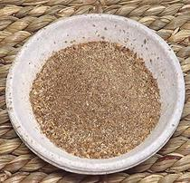

 |
SazónPuerto Rico - Sazón | ||||
| Makes: Effort: Sched: DoAhead: |
1/3 cup * 10 min Yes |
A universal Puerto Rican spice mix used for just about anything. Commercial Sazón, especially Goya brand, are primarily MSG to cut costs. This recipe has real ingredients. | |||
|
|
1 1 ----- 1 1 1 2 ----- 1 1/2 |
T T --- T T T T --- t t |
Garlic Powder Onion Powder -- Ground Cumin Seed Coriander Seed Annatto Seed (1) Oregano, Dried ------------ Salt Pepper, Black |
Make: - (25 min)
|